Agent 不是一個東西，是三個東西疊起來的結果
先把最基本的詞彙釐清。model 就是引擎，是你熟悉的 Opus、Sonnet、GLM 這些名字，它做的事情單純到近乎無聊：你丟一段文字進去，它吐一段文字出來，除此之外什麼都不會。model 本身完全沒辦法碰你的檔案系統、上網、或做任何「動作」。要讓它變得有用，必須替它裝上 harness——harness 把這個只會吐文字的東西接上外部世界，讓它可以呼叫工具、讀寫檔案、發起搜尋。而 harness 又必然依附在某個環境裡：Claude Code、Codex 這類工具的環境是檔案系統，Claude.ai 或 ChatGPT 的環境則是各自的網頁沙盒，能存文件、能搜網頁，但不是同一種東西。
當 model 被裝進某個 harness、在某個環境裡運作，這整組合起來的東西才叫做 agent。所以「Opus 4.8 搭配 Claude Code 在檔案系統上跑」是一個 agent，「GLM 搭配 Pi 這個 harness 在檔案系統上跑」也是一個 agent——agent 從來不是單一產品，而是一個隨時可以拆開重組的組合。這個框架馬上帶出一個實務判斷：多數人把全部精力砸在「換一個更強的 model」上，但訓練一個新 model 貴到一般人、一般公司根本碰不到，你真正能持續優化、也最該優化的，其實是 harness 和環境這兩層。
把這個組合關係拉到更細的顆粒度，就是一次「turn」。當你跟 agent 對話一次，harness 會把整段對話（連同一份寫死的 system prompt，交代它是誰、能用什麼工具、該遵守什麼規則）打包成一個 model provider request 送出去，model 讀完之後要嘛直接回文字，要嘛回一個「我要呼叫某個工具」的指令。如果是後者，harness 會真的去執行那個工具（例如寫一個檔案），把結果重新包進下一個 model provider request 再送回去，如此反覆，直到 model 給出一段純文字回覆為止。這整串你來我往才叫一個 turn，一個 turn 可能只有兩個 request，也可能因為任務複雜而在背後悄悄打出幾百個 request、跑上好幾個小時，而你作為使用者可能只看到介面上安安靜靜轉著一個 loading 圈。

非決定性是設計出來的，不是缺陷
理解了 model 只是在做「猜下一個 token」這件事之後，很自然會冒出一個問題：既然要猜，為什麼不乾脆把它調成每次都猜「最可能」的那個答案，這樣結果不就穩定又正確嗎？這牽涉到一個叫 likelihood trap（可能性陷阱）的現象：研究者發現，當你把 sampler 調得越確定、越傾向永遠選機率最高的 token，人類實際評分反而會下降；把隨機性完全拿掉，輸出的品質不是變好而是變差。這代表非決定性不是 bug，而是讓輸出更好的必要條件。更麻煩的是，就算你真的把 temperature 設成零，因為 LLM 的運算本質上是大規模並行、計算順序本身就會造成浮點誤差累積，即使同一顆 GPU、同一個 model、同樣的 temperature 零設定，也依然會吐出不同答案。
這意味著非決定性是刻在系統底層裡拿不掉的東西，你能做的不是消除它，而是設計出對這種變異更有韌性的系統。 這也是為什麼你跟著課程操作同一個練習，agent 給你的答案很可能跟老師畫面上不一樣——這不是哪邊做錯了，而是這套機制本來就會這樣運作，包括它偶爾會做出一些出乎意料、甚至有點危險的舉動，這一點在後面談權限管理時會不斷回來。
Context、session、與那個「沒有記憶」的真相
把一次次 turn、一次次 model provider request 串起來看，你會發現一個很違反直覺的事實：model 本身完全沒有狀態，是徹底無記憶的。它不會「記得」你前一句說了什麼——每一次 request，harness 都得把整個對話從頭到尾重新打包一次送過去，model 才「看得到」之前發生的事。這一整包送給 model 看的文字，就是所謂的 context；能容納多少 context，就是 context window，這個數字由各家廠商自行決定，例如某些新一代 model 的 context window 號稱可以到 100 萬 token 以上，也有的仍停在 12.8 萬 token 上下。而且這個 context window 從來不是從零開始算——harness 一啟動就會先塞進一份 system prompt，交代 model 自己是誰、能用哪些工具、該遵守什麼行為準則，這份底噪你一開口之前就已經存在了。
把多個 turn 累積在同一份 context 裡，就是所謂的一個 session。真正該記住的一句話是：無狀態的是 model，有狀態的是 harness，而 harness 的「記憶」只撐得住一個 session 的長度，一旦你清空 context、開新的 session，它就徹底忘光。 那怎麼讓 agent「記得」跨 session 的事？答案不是在 model 或 harness 身上硬裝一套記憶系統，而是把值得記住的東西寫進環境裡——最直接的就是寫進檔案系統。Pi 這個 harness 的作者 Mario Zeckner 有句話說得很到位：「我的程式碼庫本身就是我的記憶系統」。與其相信一套額外堆疊出來的 memory 機制，不如把重要資訊直接沉澱進 codebase，這樣即使 session 清空、harness 忘光，環境裡的東西依然還在，下一次 model 讀到檔案內容，等於又重新「想起來」了。
聰明區與笨蛋區：context 越塞越滿，agent 越用越笨
context window 看起來很大，一般對話用掉的 token 數其實少得可憐，於是很自然會覺得「反正空間還很多，塞多一點沒差」。但這個直覺是錯的，原因出在 model 理解文字的機制上：model 靠的是 attention，也就是去追蹤每一個 token 跟其他每一個 token 之間的關係。token 數量每增加一點，需要追蹤的關係數量是以平方等級在暴增——1,000 個 token 大約要處理 100 萬組關係，10,000 個 token 要處理上億組，10 萬個 token 逼近百億組。這就像在聯賽裡多加一支球隊，看起來只是加一個隊，但要打的比賽場次卻是暴增——塞進 context 的每一段文字，都在稀釋 model 對真正重要內容的注意力，這個現象叫 attention degradation。
實際效果就是：context 前段，model 處於「聰明區」，還有餘裕做規劃、做複雜的架構決策；context 越往後堆，它就慢慢滑進「笨蛋區」，還做得到寫檔案這類簡單操作，但已經沒辦法可靠地做複雜判斷。這個轉折不是懸崖式的、不是一過某個數字就瞬間變笨，而是緩慢下滑的曲線，但課程給了一個實用的心理警戒線：目前多數頂尖 model 大約在 15 萬 token 左右開始明顯進入笨蛋區——這個數字比上一版課程錄製時的 10-12 萬 token 已經往後推進了不少，代表模型能力還在持續進步，但這條線永遠存在。也因此，廠商標榜「百萬 token context window」聽起來誘人，但那個空間主要是留給長文檢索這類不太需要「聰明」的任務，並不是要你把整個對話一路堆到那個上限再收工。當你的 session 逼近 15 萬 token，該想的不是「還能塞多少」，而是「我該怎麼收尾、怎麼把工作交接出去，重新回到聰明區」。
這樣花了多少錢：input、output、與 cache 的算術
弄懂 context 怎麼運作之後，費用帳單其實就沒那麼玄了。每一次 model provider request，你送出去的叫 input token，收回來的叫 output token，而 output token 的計費通常比 input token 貴上非常多——課程示範的其中一組 API 費率是 input 每百萬 token 10 美元，output 每百萬 token 50 美元，整整是 5 倍。乍看之下 output 比較貴很讓人擔心，但實務上 input token 才是拖垮帳單的大宗，因為 output 通常只是幾百 token 的一次工具呼叫或簡短回覆，而 input 卻是整個 session 累積下來的所有歷史。
這裡有個關鍵的省錢機制叫 prefix cache：如果一個新 request 開頭跟前一個 request 完全一樣的那段文字（也就是慢慢累積、每次只在尾巴加東西的 session 特性），provider 會直接重用之前的運算結果，按「cache read」計價，而 cache read 的價格可以低到基礎 input 價格的十分之一。實測案例是這樣的：第一次打招呼，只用了 2 個 input token 加 14 個 output token，但背後其實寫入了超過 2,000 token 的 cache（因為系統提示詞很長，第一次要整段建立 cache）；到了第二輪對話，送出的 504 個 input token 裡，有超過 2 萬 token 是直接命中 cache、以極低費率計價，實際被完整計費的部分反而只剩 500 多個 token 加 46 個 output token。這解釋了為什麼 session 越長帳單通常不是線性成長，而是前段貴、後段相對划算——但前提是你沒有清空 context，一旦清空重來，之前辛苦攢起來的 cache 就整個作廢，得重新暖機。 這也是為什麼 harness 會刻意把「很少變動」的內容放在 request 最前面、把「常常變動」的內容放在後面，就是為了讓 cache 命中率最大化。而反過來看，這也再次印證前一節的結論：塞進 context 的每一個 token，會在往後所有 request 裡被反覆計費，不只拖慢 model，也在悄悄燒錢。
幻覺：不是 model 不夠聰明，是資訊來源出了問題
聰明區、笨蛋區談的是 model 表現的滑坡，而滑坡最危險的落點，就是幻覺——model 用非常自信的語氣講出錯的東西。課程給了一個很實用的分類法：幻覺分成 factuality（事實性）跟 faithfulness（忠實性）兩種，判斷方式是一句話：這個資訊有沒有出現在 model 當下的 context window 裡。 如果沒有，model 只能倚賴它訓練時壓進參數裡的「parametric knowledge」，而這種知識天生是模糊的——把海量訓練資料壓縮進幾十億個數字，本來就會像把高解析度照片壓成縮圖一樣丟失細節，再加上訓練有明確的知識截止日期，截止日期之後發生的事它完全沒看過，截止日期之前的事也可能只留下模糊印象。課程實測的例子是問某個 model「X 平台 API 收費多少，不要搜尋，憑你知道的回答」，它給出的免費、$100、$5,000 各級價格已經是過時資訊；等到允許它去搜尋核實，才發現真實定價早就變了。這種幻覺的解法不是換更聰明的 model，而是把正確資訊直接餵進 context——但這只能解決 factuality 問題，解決不了 faithfulness 問題。
faithfulness 幻覺更棘手：即使你已經把正確資訊放進 context 裡了，model 依然可能忽略它、偏離它，講出跟你提供的資料對不上的東西，而這正是笨蛋區最容易發作的症狀——context 裡塞的東西太多，attention 關係太複雜，model 分不清楚哪些才是真正重要的線索。這意味著即便你把資料準備得再完美，只要 context 已經超載，一樣會出包。面對這種情況，多半沒有捷徑，就是清空 context、退出笨蛋區，讓 model 重新在乾淨的空間裡運作；即使身處聰明區，因為非決定性的本質，也偶爾還是會撞見忠實性錯誤，這是這套系統目前沒辦法完全根除的代價。
Effort 力道與選 model：兩個容易被過度操心的變數
Effort 是幾乎所有 model provider 現在都提供的旋鈕，本質是控制 model 願意花多少「reasoning token」——也就是它在給出最終答案之前，先寫給自己看的思考過程。這套機制的理論基礎來自 chain-of-thought：讓 model 展示推理步驟，答對率明顯比直接跳答案高。課程實測同一個「探索這個 codebase 並告訴我內容」的任務，用 max effort 花了 41,000 token、跑了 2 分 15 秒，用 low effort 只花 11,000 token、跑了 1 分 11 秒——效果差距確實存在，max effort 多挖出一些細節、甚至抓到文件跟程式碼不同步的問題，但代價是四倍的 token。放到公開的 DeepSWE 基準測試上看得更清楚：某個 model 系列從 low 到 max effort，準確率從 60% 一路爬到 70%，但另一個 model 在 low effort 只有 31% 準確率、每個任務卻要價高達 26 美元，而換一個 model 用同樣中等力道，只要 1.86 美元就能拿到比那 26 美元更好的表現。effort 同時是品質、金錢、跟延遲三個維度的槓桿，而且延遲的原因很直接：花越多 reasoning token，你就越快把自己送進笨蛋區。
面對這麼多變數，容易讓人陷入「每個任務都要重新挑一次最佳 model 跟 effort」的焦慮，但課程給的建議恰恰相反：不要 min-max。把 model 想成公司裡的員工，員工會換、會來來去去，你真正該投資的是能讓「任何員工都能發揮」的公司基礎建設，也就是 harness 跟環境；如果只靠不斷微調 model 本身，換掉 model 的那一刻，之前的優化就全部歸零。實際做法是挑一個你信任的 model、一個固定的 effort 等級，長期用下去，你會因為熟悉這個「員工」的脾氣而越用越順手，比起靠著跑分表格頻繁跳槽划算得多——跑分終究只是抽象基準，不等於你每天實際在做的那些具體任務。
Subagent：把探索工作外包出去，替主線 context 省空間
聰明區跟笨蛋區的矛盾，最終逼出了一個很實用的解法：既然探索式的任務（讀懂一整個陌生 codebase）往往要花大量 token，而這些 token 一旦進了主 session 就會一路拖著往後所有 request 走，那不如把這段探索工作外包給另一個 agent 去做，只把結論帶回來。這就是 subagent：harness 派出一個獨立的 agent，讓它自己去消耗大量 token 深挖細節，最後只把摘要交還給主線的 orchestrator，就像資深工程師把研究工作丟給junior，junior 花時間讀完、回報重點，資深工程師的腦子（也就是主 session 的 context）完全不用被那些細節塞滿。orchestrator 甚至可以同時派出多個 subagent 平行處理不同任務，每個 subagent 還能有自己的 system prompt、自己的 model、自己的 effort 等級，有些 harness 甚至允許 subagent 再往下衍生自己的 subagent，形成多層結構——當然，這個深度上限依 harness 支援程度而異，有的只能往下一層。subagent 本質上是把「聰明區有限、越用越貴」這個限制，轉換成一個資源調度問題：把便宜、繁重、可以摘要化的工作切出去，把主線的聰明區留給真正需要判斷力的決策。